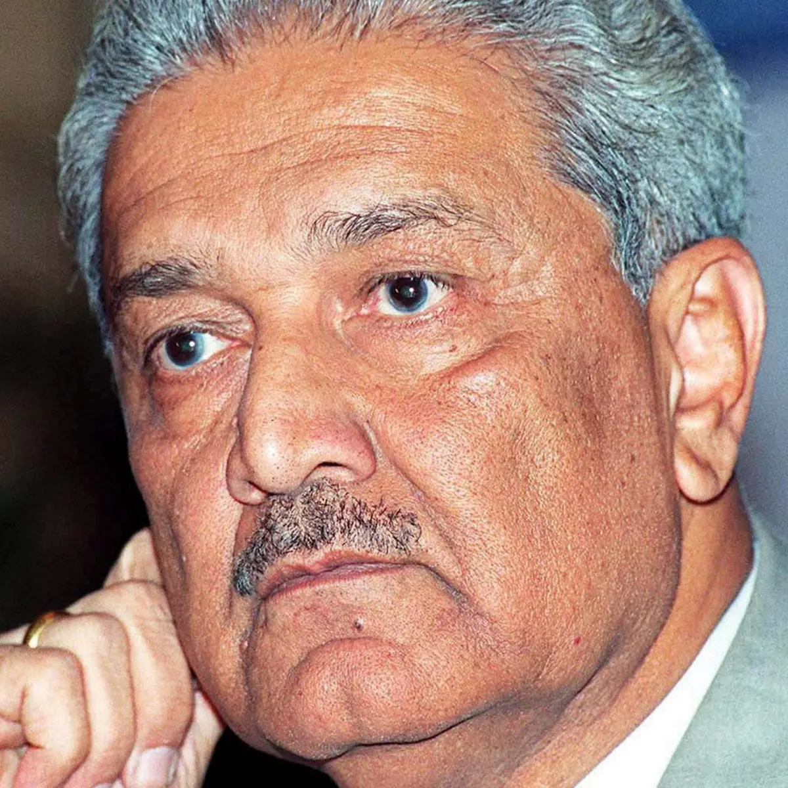

Dr Abdul Qadeer Khan
1936 - 2021
Missile man of Pakistan
Abdul Qadeer Khan, NI, HI, FPAS, known as A. Q. Khan, was a Pakistani nuclear physicist and metallurgical engineer who is colloquially known as the "father of Pakistan's atomic weapons program". Wikipedia Born: April 27, 1936, Bhopal, India Died: October 10, 2021, KRL Hospital, Islamabad Education: Delft University of Technology (TU Delft), MORE Place of burial: H-8 Graveyard, Islamabad Children: Dina Khan, Ayesha Khan Parents: Abdul Ghafoor Khan, Zulekha Begum Siblings: Abdul Quyuim Khan Feedback People also search for Dina Khan Abdus Salam Abdul Sattar Edhi
biographic
- Abdul Qadeer Khan was born into a modest family.
- He studied metallurgical engineering at the University of Karachi, Pakistan.
- Khan pursued advanced studies in Europe, earning a doctorate in metallurgical engineering from the Catholic University of Leuven in Belgium in 1972.
- After completing his studies, Khan returned to Pakistan in 1972.
- Khan played a pivotal role in establishing Pakistan's nuclear weapons program.
- He was involved in uranium enrichment and is often considered the father of Pakistan's nuclear weapons program
- In 2009, the Pakistani government lifted restrictions on Khan, but he remained a controversial figure.
- Abdul Qadeer Khan is a highly respected figure in Pakistan, often celebrated for his role in making the country a nuclear power
- In his later years, Khan remained an influential voice on nuclear issues in Pakistan, expressing his views on national and international forums.